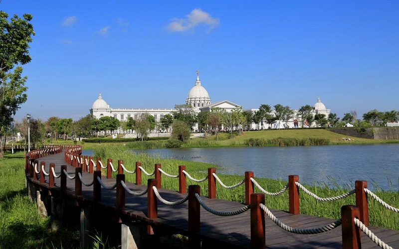

Chimei Museum
Tainan City
Muse Plaza & Olympus Bridge
The Chimei Museum is the museum with the most abundant collections in Taiwan. It is a private museum established
in 1992 by the Chi Mei Corporation. The museum is known for having one of the largest collections of violins
in the world. The Greek architecture, themed with Greek mythology, is also a feature of the museum which attracts
lots of people to come and take photos. Even in the nights, when the museum is closed, the elegant structure outlined
by the lights, making it a romantic scenery. Next to the museum sits the Tainan Metropolitan Park, which is also a good place
for a short walk in the afternoon.
- Official Website: https://www.chimeimuseum.org/ml/English/3
- Best seasons: all year around
- Transportation:
The nearest train station is the Boa'an station. Public bus service to the area is available from R3,R4 shuttle bus.